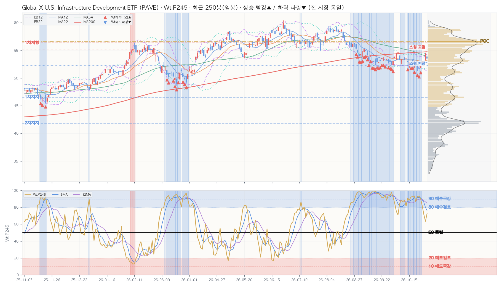

| 구분 | 가격 | 현재가 대비 | 거래 비중 | 봉우리 높이 |
|---|---|---|---|---|
| ▲ 저항 1차 | 56.37 | +5.3% | 11.0% | 0.96 |
| ▲ 저항 2·3차 — | 현재가 위 거래 봉우리 1개뿐 | |||
| ■ 소화 중 — | 현재가 ±0.25×ATR 안 거래 봉우리 없음 | |||
| ▼ 지지 1차 | 46.54 | -13.0% | 6.0% | 0.20 |
| ▼ 지지 2차 | 41.87 | -21.8% | 8.5% | 0.49 |
| ▼ 지지 3차 — | 현재가 아래 거래 봉우리 2개뿐 | |||
| ┄ 스윙 고점 (참고) | 55.23 | +3.2% | 피벗 6개 · 마지막 18봉 전 | |
| ┄ 스윙 저점 (참고) | 52.27 | -2.3% | 피벗 2개 · 마지막 32봉 전 | |
| 지표 | D 일봉 | W 주봉 | M 월봉 |
|---|---|---|---|
| Close | 53.52 | 53.52 | 53.52 |
| Chg% | ▼ -1.78% | ▲ +3.72% | ▲ +1.94% |
| SigNm | 53.1 | 46.7 | 54.5 |
| SigRk | 54.0 | 71.7 | 80.8 |
| PvN2 | 0 | 0 | 0 |
| WtAll | 75 | 77 | 91 |
nix_snapshot_market_temp_us.json (2026-10-30 · 읽기 전용 크로스 참조)| 창 | 5봉 | 12봉 | 22봉 | 54봉 | 120봉 | 245봉 | 컴포짓 | 주봉 참고 |
|---|---|---|---|---|---|---|---|---|
| 사분면 | 개선 | 개선 | 개선 | 지연 | 지연 | 약화 | 지연 | 지연 |
| RS-Ratio | 86.24 ▲ | 84.00 ▲ | 83.12 ▲ | 84.02 ▼ | 96.47 ▼ | 109.76 ▼ | 90.20 ▲ | 92.44 ▼ |
| RS-Momentum | 106.77 ▲ | 101.76 ▲ | 100.26 ▲ | 85.61 ▼ | 77.22 ▲ | 97.90 ▼ | 93.54 ▲ | 93.15 ▲ |
| Perf | Mac | Tcr.U | Tcr.D | Zc | BBs | PvN2 | Sts | Wt.P245 | SA.P245 | SA02.P245 | S122.P245 | S051.P245 | SU31.P245 | Inds.Sig | ||||||||||||||||||||||||||||||||||||||||||||||||||
|---|---|---|---|---|---|---|---|---|---|---|---|---|---|---|---|---|---|---|---|---|---|---|---|---|---|---|---|---|---|---|---|---|---|---|---|---|---|---|---|---|---|---|---|---|---|---|---|---|---|---|---|---|---|---|---|---|---|---|---|---|---|---|---|---|
| SigNm | SigRk | |||||||||||||||||||||||||||||||||||||||||||||||||||||||||||||||
| Date | T-Set | H | L | C | V | Chg% | DChg% | YTD | P5 | P12 | P16 | P22 | P54 | P120 | P245 | Cdl | 종합 | 단 | 중 | 장 | 5 | 12 | 22 | 54 | 5 | 12 | 22 | 54 | 12 | 22 | 54 | 12 | 22 | 54 | D | MA_Sts | C_Sts | EMC_Sts | .P | .J | Bar(P) | Ar | .P | .J | Bar(P) | Ar | .P | .J | Bar(P) | Ar | .P | .J | Bar(P) | Ar | .P | .J | Bar(P) | Ar | .P | .J | Bar(P) | Ar | D | D |
| 2026-10-30 | else | 54.28 | 53.10 | 53.52 | 1.4M | -1.8 | +0.0 | +9.6 | +3.7 | +1.3 | +0.5 | +1.9 | -8.7 | -6.2 | +12.1 | 0 | 0 | -1 | 0 | 1 | 0.4 | 0.8 | 0.8 | 0.9 | 0.2 | 0.3 | 0.4 | 1.7 | 0.9 | 0.5 | -0.3 | 0 | 0 | 0 | 0 | 🟥🟥🟦🟦🟦🟦🟥🟥 | 🟥🟦🟦🟦🟦🟥🟥🟥 | 🟥🟦🟦🟦🟦🟥🟥🟥 | 73.0 | 🔵 | █████████ | ▼ | 53.6 | 📈 | ██████ | ▼ | 97.2 | ✅ | ████████████ | ↔ | 50.7 | 📈 | ██████ | ↔ | 95.9 | ✅ | ████████████ | ↔ | 21.7 | 🟥 | ██ | ↔ | 53.1 | 54.0 |
| 2026-10-29 | else | 54.61 | 53.20 | 54.49 | 1.4M | +2.2 | -1.8 | +11.5 | +4.6 | +1.8 | +2.3 | +3.0 | -6.6 | -4.1 | +14.3 | -11 | 0 | -1 | 0 | 1 | 0.9 | 1.1 | 1.0 | 1.0 | 0.2 | 0.2 | 0.3 | 1.7 | 2.4 | 1.9 | 0.3 | 0.8 | 0.1 | 0 | +1 | 🟥🟥🟦🟦🟦🟦🟥🟥 | 🟥🟦🟦🟦🟥🟥🟥🟥 | 🟥🟥🟥🟥🟥🟥🟥🟥 | 63.4 | 🔷 | ████████ | ▼ | 48.1 | 📉 | ██████ | ▼ | 96.3 | ✅ | ████████████ | ↔ | 24.9 | 🟥 | ███ | ▼ | 96.3 | ✅ | ████████████ | ↔ | 19.4 | 🅰️ | ██ | ↔ | 37.9 | 44.1 |
| 2026-10-28 | else | 53.55 | 52.94 | 53.34 | 1.7M | +0.7 | +0.3 | +9.2 | +0.4 | -0.1 | -2.4 | +0.5 | -8.8 | -6.1 | +11.4 | 5 | 0 | 0 | 0 | 1 | 1.0 | 0.7 | 0.7 | 0.8 | 0.2 | 0.2 | 0.6 | 2.1 | 1.1 | 0.4 | -0.5 | 0 | 0 | 0 | 0 | 🟥🟥🟦🟦🟦🟦🟦🟥 | 🟥🟦🟦🟦🟦🟥🟥🟥 | 🟥🟦🟦🟦🟦🟥🟥🟥 | 71.3 | 🔵 | █████████ | ▼ | 59.0 | 🔹 | ███████ | ▼ | 94.9 | 🅿️ | ████████████ | ▼ | 19.8 | 🅰️ | ██ | ▼ | 96.3 | ✅ | ████████████ | ↔ | 37.6 | 🔶 | ████ | ↔ | 45.8 | 53.1 |
| 2026-10-27 | else | 53.01 | 52.33 | 52.96 | 1.5M | +1.6 | +1.1 | +8.4 | +0.6 | -0.9 | -2.1 | -1.0 | -9.8 | -9.2 | +11.2 | -11 | 0 | 0 | 0 | 1 | 0.7 | 0.5 | 0.5 | 0.6 | 0.3 | 0.4 | 0.7 | 2.4 | 0.4 | -0.1 | -0.7 | 0 | 0 | 0 | 0 | 🟥🟥🟦🟦🟦🟦🟦🟥 | 🟥🟦🟦🟦🟦🟦🟥🟥 | 🟥🟦🟦🟦🟦🟦🟥🟥 | 81.7 | 🟦 | ██████████ | ▼ | 77.0 | 🔵 | ██████████ | ↔ | 94.8 | 🅿️ | ████████████ | ↔ | 37.0 | 🔶 | ████ | ▼ | 96.4 | ✅ | ████████████ | ↔ | 57.8 | 🔹 | ███████ | ▲ | 52.3 | 61.5 |
| 2026-10-26 | else | 52.33 | 51.74 | 52.13 | 2.0M | +1.0 | +2.7 | +6.7 | -1.2 | -2.1 | -3.2 | -1.8 | -10.6 | -9.1 | +8.3 | -11 | 0 | 0 | 0 | 1 | 0.4 | 0.3 | 0.3 | 0.4 | 0.5 | 0.5 | 0.9 | 2.6 | -1.1 | -1.4 | -1.2 | 0 | 0 | 0 | 0 | 🟥🟥🟦🟦🟦🟦🟦🟦 | 🟥🟦🟦🟦🟦🟦🟦🟦 | 🟥🟦🟦🟦🟦🟦🟦🟦 | 90.2 | 🅿️ | ███████████ | ↔ | 90.9 | 🅿️ | ███████████ | ▲ | 95.1 | ✅ | ████████████ | ↔ | 87.1 | Ⓜ️ | ███████████ | ▲ | 96.8 | ✅ | ████████████ | ↔ | 69.0 | 🔷 | ████████ | ↔ | 58.9 | 71.1 |
| 2026-10-23 | else | 51.84 | 51.01 | 51.60 | 1.6M | -0.9 | +3.7 | +5.6 | -2.2 | -3.2 | -2.7 | -3.4 | -12.1 | -8.2 | +6.9 | 0 | 0 | 0 | 0 | 1 | 0.2 | 0.2 | 0.3 | 0.3 | 0.4 | 0.5 | 1.0 | 2.7 | -2.3 | -2.4 | -1.5 | -1.5 | -1.6 | 0 | -6 | 🟥🟥🟦🟦🟦🟦🟦🟦 | 🟥🟦🟦🟦🟦🟦🟦🟦 | 🟥🟦🟦🟦🟦🟦🟦🟦 | 93.3 | 🅿️ | ████████████ | ▲ | 90.4 | 🅿️ | ███████████ | ▲ | 95.3 | ✅ | ████████████ | ↔ | 84.9 | 🟦 | ███████████ | ▲ | 97.0 | ✅ | ████████████ | ↔ | 60.3 | 🔷 | ███████ | ↔ | 75.3 | 82.0 |
| 2026-10-22 | else | 52.51 | 51.31 | 52.07 | 2.1M | -2.0 | +2.8 | +6.6 | -1.7 | -4.7 | -0.8 | -2.8 | -10.8 | -8.1 | +8.4 | 7 | -1 | 11 | -7 | 1 | 0.3 | 0.3 | 0.3 | 0.4 | 0.3 | 0.5 | 0.8 | 2.5 | -2.3 | -2.1 | -1.3 | -1.7 | -1.5 | 0 | -6 | 🟥🟥🟦🟦🟦🟦🟦🟦 | 🟥🟦🟦🟦🟦🟦🟦🟦 | 🟥🟦🟦🟦🟦🟦🟦🟦 | 92.6 | 🅿️ | ████████████ | ▲ | 89.4 | Ⓜ️ | ███████████ | ▲ | 95.9 | ✅ | ████████████ | ↔ | 89.6 | Ⓜ️ | ███████████ | ▲ | 97.4 | ✅ | ████████████ | ▲ | 50.7 | 📈 | ██████ | ↔ | 72.0 | 77.7 |
| 2026-10-21 | else | 53.28 | 52.74 | 53.14 | 1.2M | +0.9 | +0.7 | +8.8 | +0.6 | -1.8 | +0.4 | +0.1 | -9.4 | -6.4 | +9.4 | -9 | -1 | 11 | -7 | 1 | 0.4 | 0.4 | 0.4 | 0.4 | 0.2 | 0.7 | 0.8 | 2.5 | -0.2 | -0.2 | -0.8 | 0 | 0 | 0 | 0 | 🟥🟥🟦🟦🟦🟦🟦🟥 | 🟥🟦🟦🟦🟦🟦🟦🟥 | 🟥🟦🟦🟦🟦🟦🟥🟥 | 86.8 | Ⓜ️ | ███████████ | ↔ | 83.8 | 🟦 | ██████████ | ↔ | 96.6 | ✅ | ████████████ | ▲ | 55.4 | 🔹 | ███████ | ↔ | 97.6 | ✅ | ████████████ | ▲ | 34.8 | 🟠 | ████ | ↔ | 55.2 | 67.1 |
| 2026-10-20 | else | 53.03 | 51.89 | 52.65 | 2.5M | -0.2 | +1.6 | +7.8 | -1.7 | -2.3 | -0.8 | -0.6 | -10.1 | -4.5 | +9.0 | -3 | -1 | 11 | -7 | 1 | 0.3 | 0.3 | 0.3 | 0.3 | 0.3 | 0.7 | 0.8 | 2.6 | -1.1 | -1.2 | -1.0 | -0.5 | -0.7 | 0 | -1 | 🟥🟥🟦🟦🟦🟥🟦🟦 | 🟥🟦🟦🟦🟦🟦🟦🟦 | 🟥🟦🟦🟦🟦🟦🟦🟦 | 93.5 | 🅿️ | ████████████ | ▲ | 91.9 | 🅿️ | ███████████ | ▲ | 96.9 | ✅ | ████████████ | ▲ | 92.9 | 🅿️ | ████████████ | ▲ | 97.4 | ✅ | ████████████ | ↔ | 32.8 | 🟠 | ████ | ▼ | 68.9 | 75.8 |
| 2026-10-19 | else | 53.46 | 52.63 | 52.77 | 1.1M | -0.0 | +1.4 | +8.0 | -1.1 | -0.5 | -1.3 | -0.3 | -8.3 | -5.3 | +8.8 | -1 | -1 | 11 | -7 | 1 | 0.3 | 0.3 | 0.3 | 0.3 | 0.3 | 0.7 | 0.8 | 2.5 | -1.1 | -1.0 | -1.0 | 0 | 0 | 0 | -1 | 🟥🟥🟦🟦🟦🟥🟦🟦 | 🟥🟦🟦🟦🟦🟦🟦🟦 | 🟥🟦🟦🟦🟦🟦🟦🟦 | 92.6 | 🅿️ | ████████████ | ▲ | 88.9 | Ⓜ️ | ███████████ | ▲ | 96.4 | ✅ | ████████████ | ↔ | 80.9 | 🟦 | ██████████ | ▲ | 96.1 | ✅ | ████████████ | ↔ | 26.0 | 🔴 | ███ | ▼ | 69.5 | 78.5 |
| 2026-10-16 | else | 53.56 | 52.56 | 52.78 | 1.8M | -0.3 | +1.4 | +8.0 | -1.3 | +0.5 | -0.5 | +0.1 | -6.4 | -6.2 | +9.2 | 2 | -1 | 11 | -7 | 1 | 0.3 | 0.3 | 0.3 | 0.3 | 0.3 | 0.7 | 0.7 | 2.5 | -1.2 | -1.1 | -1.0 | 0 | 0 | 0 | -1 | 🟥🟥🟦🟦🟦🟥🟦🟦 | 🟥🟦🟦🟦🟦🟦🟦🟦 | 🟥🟦🟦🟦🟦🟦🟦🟦 | 92.2 | 🅿️ | ███████████ | ▲ | 90.8 | 🅿️ | ███████████ | ▲ | 95.6 | ✅ | ████████████ | ↔ | 95.5 | ✅ | ████████████ | ▲ | 94.1 | 🅿️ | ████████████ | ↔ | 33.6 | 🟠 | ████ | ▼ | 66.5 | 73.6 |
| 2026-10-15 | else | 52.95 | 51.93 | 52.95 | 1.6M | +0.2 | +1.1 | +8.4 | -0.6 | +0.1 | -0.8 | +0.2 | -5.6 | -5.6 | +10.5 | 0 | -1 | 11 | -7 | 1 | 0.3 | 0.4 | 0.4 | 0.4 | 0.2 | 0.7 | 0.7 | 2.5 | -0.8 | -0.7 | -1.0 | -0.7 | -0.8 | 0 | 0 | 🟥🟥🟦🟦🟦🟥🟦🟦 | 🟥🟦🟦🟦🟦🟦🟦🟦 | 🟥🟦🟦🟦🟦🟦🟦🟦 | 88.5 | Ⓜ️ | ███████████ | ▲ | 81.9 | 🟦 | ██████████ | ↔ | 95.2 | ✅ | ████████████ | ↔ | 73.8 | 🔵 | █████████ | ▲ | 92.3 | 🅿️ | ███████████ | ▼ | 36.4 | 🔶 | ████ | ↔ | 64.3 | 73.4 |
| 2026-10-14 | else | 53.30 | 52.33 | 52.82 | 2.4M | -1.3 | +1.3 | +8.1 | -0.9 | -0.5 | -1.4 | -0.4 | -3.9 | -6.3 | +12.0 | 2 | -1 | 11 | -7 | 1 | 0.2 | 0.5 | 0.4 | 0.4 | 0.2 | 0.8 | 0.6 | 2.5 | -1.0 | -0.9 | -1.1 | 0 | 0 | 0 | 0 | 🟥🟥🟦🟦🟦🟥🟦🟦 | 🟥🟦🟦🟦🟦🟦🟦🟦 | 🟥🟦🟦🟦🟦🟦🟦🟦 | 90.9 | 🅿️ | ███████████ | ▲ | 88.2 | Ⓜ️ | ███████████ | ▲ | 94.8 | 🅿️ | ████████████ | ▼ | 92.9 | 🅿️ | ████████████ | ▲ | 91.5 | 🅿️ | ███████████ | ▼ | 50.3 | 📈 | ██████ | ↔ | 66.2 | 72.6 |
| 2026-10-13 | else | 53.58 | 52.78 | 53.54 | 1.5M | +0.3 | -0.0 | +9.6 | -2.0 | +0.1 | +0.9 | -1.0 | -6.2 | -2.9 | +11.1 | -11 | -1 | 11 | -7 | 1 | 0.4 | 0.6 | 0.6 | 0.6 | 0.3 | 0.6 | 0.5 | 2.4 | 0.2 | 0.6 | -0.8 | 0 | 0 | 0 | 0 | 🟥🟥🟦🟦🟦🟥🟦🟥 | 🟥🟦🟦🟦🟦🟥🟥🟥 | 🟥🟦🟦🟦🟦🟦🟥🟥 | 81.4 | 🟦 | ██████████ | ▼ | 76.1 | 🔵 | █████████ | ▼ | 94.1 | 🅿️ | ████████████ | ▼ | 34.1 | 🟠 | ████ | ↔ | 90.4 | 🅿️ | ███████████ | ▼ | 61.9 | 🔷 | ████████ | ↔ | 50.4 | 63.5 |
| 2026-10-12 | else | 53.76 | 53.31 | 53.37 | 797.5K | -0.1 | +0.3 | +9.3 | -1.4 | +0.6 | +0.8 | +0.0 | -7.2 | -3.4 | +11.4 | -6 | -1 | 11 | -7 | 1 | 0.5 | 0.6 | 0.5 | 0.6 | 1.1 | 0.6 | 0.5 | 2.5 | -0.1 | 0.1 | -0.9 | 0 | 0 | 0 | 0 | 🟥🟥🟦🟦🟦🟥🟥🟦 | 🟥🟦🟦🟦🟦🟥🟦🟦 | 🟥🟦🟦🟦🟦🟦🟦🟦 | 88.4 | Ⓜ️ | ███████████ | ↔ | 83.9 | 🟦 | ██████████ | ↔ | 95.1 | ✅ | ████████████ | ▼ | 54.9 | 📈 | ███████ | ▼ | 93.1 | 🅿️ | ████████████ | ▼ | 76.0 | 🔵 | █████████ | ▲ | 58.7 | 73.8 |
| 2026-10-09 | else | 53.70 | 53.03 | 53.45 | 1.0M | +0.4 | +0.1 | +9.4 | -0.8 | +0.1 | +1.0 | -1.4 | -7.3 | -3.6 | +13.3 | -9 | -1 | 11 | -7 | 1 | 0.4 | 0.5 | 0.5 | 0.6 | 0.8 | 0.5 | 0.5 | 2.4 | 0.1 | 0.3 | -0.9 | 0 | 0 | 0 | 0 | 🟥🟥🟥🟦🟦🟥🟥🟦 | 🟥🟦🟦🟦🟦🟥🟥🟦 | 🟥🟦🟦🟦🟦🟦🟦🟦 | 86.7 | Ⓜ️ | ███████████ | ↔ | 84.4 | 🟦 | ██████████ | ↔ | 95.5 | ✅ | ████████████ | ▼ | 69.6 | 🔷 | █████████ | ↔ | 94.9 | 🅿️ | ████████████ | ▼ | 82.9 | 🟦 | ██████████ | ▲ | 53.1 | 69.0 |
| Perf | Mac | Tcr.U | Tcr.D | Zc | BBs | PvN2 | Sts | Wt.P54 | SA.P54 | SA02.P54 | S122.P54 | S051.P54 | SU31.P54 | Inds.Sig | |||||||||||||||||||||||||||||||||||||||||||||||||||
|---|---|---|---|---|---|---|---|---|---|---|---|---|---|---|---|---|---|---|---|---|---|---|---|---|---|---|---|---|---|---|---|---|---|---|---|---|---|---|---|---|---|---|---|---|---|---|---|---|---|---|---|---|---|---|---|---|---|---|---|---|---|---|---|---|---|
| SigNm | SigRk | ||||||||||||||||||||||||||||||||||||||||||||||||||||||||||||||||
| Date | T-Set | H | L | C | V | Chg% | DChg% | YTD | P1 | P3 | P5 | P8 | P12 | P16 | P22 | P54 | Cdl | 종합 | 단 | 중 | 장 | 5 | 12 | 22 | 54 | 5 | 12 | 22 | 54 | 12 | 22 | 54 | 12 | 22 | 54 | W | MA_Sts | C_Sts | EMC_Sts | .P | .J | Bar(P) | Ar | .P | .J | Bar(P) | Ar | .P | .J | Bar(P) | Ar | .P | .J | Bar(P) | Ar | .P | .J | Bar(P) | Ar | .P | .J | Bar(P) | Ar | W | W |
| 2026-10-30 | else | 54.61 | 51.74 | 53.52 | 8.0M | +3.7 | +0.0 | +9.6 | +3.7 | +0.1 | +0.1 | -3.0 | -8.8 | -5.6 | -5.0 | +13.5 | -7 | -2 | -2 | 0 | -7 | 0.2 | 0.3 | 0.3 | 1.1 | 0.2 | 0.9 | 1.2 | 1.1 | -0.4 | -1.0 | 0.1 | 0 | 0 | 0 | 0 | 🟥🟥🟥🟥🟥🟦🟦🟥 | 🟥🟥🟥🟥🟦🟦🟦🟥 | 🟥🟥🟥🟥🟦🟦🟦🟥 | 81.6 | 🟦 | ██████████ | ↔ | 76.5 | 🔵 | █████████ | ▼ | 92.5 | 🅿️ | ████████████ | ▲ | 44.6 | 🔸 | █████ | ▼ | 92.5 | 🅿️ | ████████████ | ▲ | 87.8 | Ⓜ️ | ███████████ | ↔ | 46.7 | 71.7 |
| 2026-10-23 | else | 53.46 | 51.01 | 51.60 | 8.5M | -2.2 | +3.7 | +5.6 | -2.2 | -4.2 | -2.6 | -6.7 | -8.4 | -9.7 | -6.1 | +11.2 | 7 | -2 | -2 | 0 | -7 | 0.2 | 0.2 | 0.2 | 1.0 | 0.4 | 1.2 | 1.5 | 1.3 | -1.4 | -2.0 | -0.4 | 0 | -1.2 | 0 | -4 | 🟥🟥🟥🟥🟥🟦🟦🟦 | 🟥🟥🟥🟦🟦🟦🟦🟦 | 🟥🟥🟥🟦🟦🟦🟦🟦 | 93.8 | 🅿️ | ████████████ | ▲ | 94.3 | 🅿️ | ████████████ | ▲ | 92.5 | 🅿️ | ████████████ | ▲ | 88.3 | Ⓜ️ | ███████████ | ↔ | 92.5 | 🅿️ | ████████████ | ▲ | 94.9 | 🅿️ | ████████████ | ▲ | 68.3 | 86.4 |
| 2026-10-16 | else | 53.76 | 51.93 | 52.78 | 8.1M | -1.3 | +1.4 | +8.0 | -1.3 | -1.3 | -2.4 | -6.4 | -8.5 | -10.3 | -4.7 | +10.1 | 0 | -10 | -11 | -7 | -7 | 0.2 | 0.2 | 0.2 | 1.2 | 0.3 | 1.2 | 1.4 | 1.1 | -1.2 | -1.7 | -0.1 | 0 | -0.5 | 0 | -4 | 🟥🟥🟥🟥🟥🟦🟦🟦 | 🟥🟥🟥🟦🟦🟦🟦🟦 | 🟥🟥🟥🟥🟦🟦🟦🟦 | 91.3 | 🅿️ | ███████████ | ▲ | 95.1 | ✅ | ████████████ | ▲ | 86.3 | Ⓜ️ | ███████████ | ▲ | 94.9 | 🅿️ | ████████████ | ▲ | 86.3 | Ⓜ️ | ███████████ | ▲ | 92.1 | 🅿️ | ███████████ | ▲ | 63.3 | 82.9 |
| 2026-10-09 | else | 54.92 | 52.65 | 53.45 | 6.7M | -0.8 | +0.1 | +9.4 | -0.8 | +0.9 | -3.1 | -8.8 | -5.1 | -8.7 | -5.9 | +13.6 | 5 | -10 | -11 | -7 | -7 | 0.2 | 0.3 | 0.3 | 1.2 | 0.3 | 1.1 | 1.2 | 1.1 | -1.1 | -1.5 | 0.1 | 0 | 0 | 0 | 0 | 🟥🟥🟥🟥🟥🟦🟦🟦 | 🟥🟥🟥🟥🟦🟦🟦🟦 | 🟥🟥🟥🟥🟦🟦🟦🟦 | 84.2 | 🟦 | ██████████ | ▲ | 89.6 | Ⓜ️ | ███████████ | ↔ | 74.8 | 🔵 | █████████ | ▲ | 86.9 | Ⓜ️ | ███████████ | ▲ | 74.8 | 🔵 | █████████ | ▲ | 88.3 | Ⓜ️ | ███████████ | ↔ | 58.1 | 79.7 |
| 2026-10-02 | else | 54.05 | 51.95 | 53.88 | 8.2M | +0.8 | -0.7 | +10.3 | +0.8 | -0.4 | -2.6 | -8.2 | -5.0 | -6.7 | -5.0 | +15.1 | 0 | -10 | -11 | -7 | -7 | 0.4 | 0.4 | 0.3 | 1.2 | 0.3 | 1.2 | 1.2 | 1.0 | -1.0 | -1.4 | 0.3 | -0.1 | -1.8 | 0 | 0 | 🟥🟥🟥🟥🟥🟦🟦🟦 | 🟥🟥🟥🟥🟦🟦🟦🟦 | 🟥🟥🟥🟥🟦🟦🟦🟦 | 70.6 | 🔵 | █████████ | ↔ | 80.8 | 🟦 | ██████████ | ↔ | 52.9 | 📈 | ██████ | ▲ | 48.2 | 📉 | ██████ | ↔ | 52.9 | 📈 | ██████ | ▲ | 84.9 | 🟦 | ███████████ | ↔ | 49.5 | 73.1 |
| 2026-09-25 | else | 53.74 | 52.66 | 53.47 | 7.4M | +1.0 | +0.1 | +9.5 | +1.0 | -3.1 | -5.2 | -5.1 | -6.4 | -5.7 | -4.7 | +14.9 | -6 | -10 | -11 | -7 | -7 | 0.3 | 0.3 | 0.2 | 1.2 | 0.8 | 1.4 | 1.2 | 1.0 | -1.4 | -1.8 | 0.2 | 0 | -1.0 | 0 | 0 | 🟥🟥🟥🟥🟥🟦🟦🟦 | 🟥🟥🟥🟥🟦🟦🟦🟦 | 🟥🟥🟥🟥🟦🟦🟦🟦 | 75.0 | 🔵 | █████████ | ▲ | 94.1 | 🅿️ | ████████████ | ↔ | 43.7 | 🔸 | █████ | ▲ | 76.9 | 🔵 | █████████ | ↔ | 43.7 | 🔸 | █████ | ▲ | 89.1 | Ⓜ️ | ███████████ | ▲ | 59.6 | 84.6 |
| 2026-09-18 | else | 53.80 | 52.32 | 52.96 | 6.5M | -2.1 | +1.1 | +8.4 | -2.1 | -4.2 | -9.6 | -8.2 | -10.0 | -5.9 | -3.8 | +13.6 | 1 | -10 | -11 | -7 | -7 | 0.2 | 0.2 | 0.2 | 1.1 | 1.0 | 1.1 | 1.1 | 1.0 | -2.0 | -2.4 | 0.1 | -1.3 | -2.3 | 0 | -4 | 🟥🟥🟥🟥🟥🟦🟦🟦 | 🟥🟥🟥🟥🟦🟦🟦🟦 | 🟥🟥🟥🟥🟦🟦🟦🟦 | 73.2 | 🔵 | █████████ | ▲ | 98.8 | ✅ | ████████████ | ▲ | 30.6 | 🟠 | ███ | ▲ | 95.5 | ✅ | ████████████ | ▲ | 30.6 | 🟠 | ███ | ▲ | 92.0 | 🅿️ | ███████████ | ▲ | 72.4 | 91.1 |
| 2026-09-11 | else | 55.26 | 53.15 | 54.08 | 5.2M | -2.0 | -1.0 | +10.7 | -2.0 | -4.1 | -7.9 | -3.9 | -7.7 | -1.6 | -1.0 | +16.3 | 0 | -10 | -11 | -7 | -7 | 0.2 | 0.3 | 0.2 | 1.2 | 0.9 | 1.1 | 0.9 | 0.8 | -1.9 | -1.9 | 0.4 | -1.4 | -1.6 | 0 | -4 | 🟥🟥🟥🟥🟥🟥🟦🟦 | 🟥🟥🟥🟥🟦🟦🟦🟦 | 🟥🟥🟥🟥🟦🟦🟦🟦 | 68.2 | 🔷 | ████████ | ▲ | 98.2 | ✅ | ████████████ | ▲ | 17.7 | 🅰️ | ██ | ▲ | 94.5 | 🅿️ | ████████████ | ▲ | 17.7 | 🅰️ | ██ | ▲ | 91.9 | 🅿️ | ███████████ | ↔ | 70.1 | 92.0 |
| 2026-09-04 | else | 55.26 | 53.71 | 55.16 | 11.7M | -0.3 | -3.0 | +12.9 | -0.3 | -5.9 | -2.1 | -2.7 | -4.5 | -0.5 | +7.5 | +17.7 | -11 | -10 | -11 | -7 | -7 | 0.4 | 0.3 | 0.7 | 1.3 | 0.9 | 0.9 | 0.8 | 0.7 | -1.6 | -1.2 | 0.7 | -1.7 | -0.8 | 0 | -3 | 🟥🟥🟥🟥🟥🟥🟦🟦 | 🟥🟥🟥🟥🟦🟦🟦🟦 | 🟥🟥🟥🟥🟥🟦🟦🟦 | 66.6 | 🔷 | ████████ | ▲ | 97.2 | ✅ | ████████████ | ▲ | 15.5 | 🅰️ | ██ | ▲ | 89.7 | Ⓜ️ | ███████████ | ▲ | 15.5 | 🅰️ | ██ | ▲ | 90.8 | 🅿️ | ███████████ | ↔ | 62.2 | 83.7 |
| 2026-08-28 | else | 56.65 | 55.12 | 55.31 | 6.4M | -1.9 | -3.2 | +13.2 | -1.9 | -5.8 | -4.1 | -3.2 | -2.4 | -2.6 | +11.1 | +20.2 | 11 | -10 | -11 | -7 | -7 | 0.2 | 0.1 | 0.9 | 1.3 | 0.6 | 0.6 | 0.6 | 0.6 | -1.8 | -0.7 | 0.7 | -0.0 | 0 | 0 | -3 | 🟥🟥🟥🟥🟥🟥🟦🟦 | 🟥🟥🟥🟥🟥🟦🟦🟦 | 🟥🟥🟥🟥🟥🟦🟦🟦 | 65.0 | 🔷 | ████████ | ▲ | 99.1 | ✅ | ████████████ | ▲ | 8.9 | 🚫 | █ | ↔ | 98.0 | ✅ | ████████████ | ▲ | 8.9 | 🚫 | █ | ↔ | 71.7 | 🔵 | █████████ | ↔ | 60.7 | 88.6 |
| 2026-08-21 | else | 58.88 | 55.99 | 56.39 | 6.3M | -3.8 | -5.1 | +15.4 | -3.8 | +0.1 | +0.2 | -4.2 | +0.1 | -0.5 | +15.0 | +23.3 | 0 | -10 | -11 | -7 | -7 | 0.3 | 0.3 | 1.1 | 1.5 | 0.4 | 0.4 | 0.5 | 0.4 | -1.1 | 0.1 | 1.0 | 0 | 0 | 0 | 0 | 🟥🟥🟥🟥🟥🟥🟥🟦 | 🟥🟥🟥🟥🟥🟥🟦🟦 | 🟥🟥🟥🟥🟥🟥🟦🟦 | 63.7 | 🔷 | ████████ | ▲ | 97.0 | ✅ | ████████████ | ▲ | 10.6 | 🆘 | █ | ↔ | 97.8 | ✅ | ████████████ | ▲ | 10.6 | 🆘 | █ | ↔ | 46.5 | 📉 | ██████ | ▼ | 50.3 | 80.4 |
| 2026-08-14 | else | 59.38 | 58.06 | 58.59 | 5.4M | -0.2 | -8.6 | +19.9 | -0.2 | +1.6 | +3.4 | +0.1 | +6.6 | +4.4 | +16.8 | +30.2 | 3 | -10 | -11 | -7 | -7 | 0.6 | 0.5 | 1.3 | 1.7 | 0.2 | 0.3 | 0.3 | 0.3 | 1.2 | 1.0 | 1.6 | 0 | 0 | 0 | 0 | 🟥🟥🟥🟥🟥🟥🟥🟥 | 🟥🟥🟥🟥🟥🟥🟥🟥 | 🟥🟥🟥🟥🟥🟥🟥🟥 | 41.2 | 🔸 | █████ | ↔ | 51.8 | 📈 | ██████ | ↔ | 18.9 | 🅰️ | ██ | ▲ | 19.9 | 🅰️ | ██ | ↔ | 18.9 | 🅰️ | ██ | ▲ | 60.4 | 🔷 | ███████ | ▼ | 30.2 | 61.3 |
| Perf | Mac | Tcr.U | Tcr.D | Zc | BBs | PvN2 | Sts | Wt.P36 | SigNm.P36 | SigRk.P36 | Inds.Sig | ||||||||||||||||||||||||||||||||||||
|---|---|---|---|---|---|---|---|---|---|---|---|---|---|---|---|---|---|---|---|---|---|---|---|---|---|---|---|---|---|---|---|---|---|---|---|---|---|---|---|---|---|---|---|---|---|---|---|
| SigNm | SigRk | ||||||||||||||||||||||||||||||||||||||||||||||
| Date | T-Set | H | L | C | V | Chg% | DChg% | YTD | P1 | P3 | P6 | P12 | P24 | P36 | Cdl | 종합 | 단 | 중 | 장 | 5 | 12 | 22 | 5 | 12 | 22 | 12 | 22 | 12 | 22 | M | MA_Sts | C_Sts | EMC_Sts | .P | .J | Bar(P) | Ar | .P | .J | Bar(P) | Ar | .P | .J | Bar(P) | Ar | M | M |
| 2026-10-30 | else | 54.92 | 51.01 | 53.52 | 34.0M | +1.9 | +0.0 | +5.5 | +1.9 | -5.0 | -5.8 | +10.9 | +30.2 | +85.8 | -2 | -3 | -11 | 1 | 0 | 0.2 | 0.7 | 1.4 | 0.7 | 0.6 | 0.5 | 0.0 | 0.8 | 0 | 0 | 0 | 🟥🟥🟥🟥🟥🟦🟦🟥 | 🟥🟥🟥🟥🟦🟦🟦🟥 | 🟥🟥🟥🟥🟦🟦🟦🟥 | 92.8 | 🅿️ | ████████████ | ▲ | 92.8 | 🅿️ | ████████████ | ▲ | 92.9 | 🅿️ | ████████████ | ▲ | 54.5 | 80.8 |
| 2026-09-30 | else | 55.26 | 52.32 | 52.50 | 35.0M | -4.0 | +1.9 | +3.4 | -4.0 | -10.9 | +3.3 | +10.2 | +27.6 | +72.8 | 2 | -3 | -11 | 1 | 0 | 0.1 | 0.6 | 1.4 | 0.7 | 0.5 | 0.5 | -0.2 | 0.7 | 0 | 0 | -2 | 🟥🟥🟥🟥🟥🟦🟦🟦 | 🟥🟥🟥🟦🟦🟦🟦🟦 | 🟥🟥🟥🟦🟦🟦🟦🟦 | 96.4 | ✅ | ████████████ | ▲ | 96.7 | ✅ | ████████████ | ▲ | 95.6 | ✅ | ████████████ | ▲ | 61.0 | 85.1 |
| 2026-08-31 | else | 59.48 | 54.65 | 54.70 | 26.3M | -2.9 | -2.2 | +7.8 | -2.9 | -2.9 | -0.7 | +17.6 | +38.8 | +69.5 | 0 | -3 | -11 | 1 | 0 | 0.4 | 0.7 | 1.4 | 0.4 | 0.3 | 0.3 | 0.5 | 1.1 | 0 | 0 | -2 | 🟥🟥🟥🟥🟥🟥🟦🟦 | 🟥🟥🟥🟥🟥🟦🟦🟦 | 🟥🟥🟥🟥🟥🟦🟦🟦 | 91.5 | 🅿️ | ███████████ | ▲ | 90.5 | 🅿️ | ███████████ | ▲ | 93.9 | 🅿️ | ████████████ | ▲ | 50.6 | 78.6 |
| 2026-07-31 | else | 58.82 | 54.90 | 56.36 | 48.6M | -4.3 | -5.0 | +11.1 | -4.3 | -0.8 | +11.1 | +23.4 | +41.0 | +74.0 | 7 | -3 | -11 | 1 | 0 | 0.6 | 0.8 | 1.6 | 0.3 | 0.2 | 0.2 | 1.0 | 1.4 | 0 | 0 | 0 | 🟥🟥🟥🟥🟥🟥🟥🟦 | 🟥🟥🟥🟥🟥🟥🟦🟦 | 🟥🟥🟥🟥🟥🟥🟦🟦 | 72.0 | 🔵 | █████████ | ▲ | 71.4 | 🔵 | █████████ | ▲ | 73.4 | 🔵 | █████████ | ▲ | 37.3 | 56.5 |
| 2026-06-30 | else | 60.43 | 55.20 | 58.92 | 41.5M | +4.6 | -9.2 | +16.1 | +4.6 | +16.0 | +23.3 | +35.2 | +59.2 | +87.5 | -10 | -3 | -11 | 1 | 0 | 0.6 | 0.8 | 1.7 | 0.2 | 0.1 | 0.2 | 1.8 | 2.0 | 1.1 | 2.9 | +10 | 🟥🟥🟥🟥🟥🟥🟥🟥 | 🟥🟥🟥🟥🟥🟥🟥🟥 | 🟥🟥🟥🟥🟥🟥🟥🟥 | 16.7 | 🅰️ | ██ | ↔ | 16.5 | 🅰️ | ██ | ↔ | 16.9 | 🅰️ | ██ | ↔ | 11.9 | 20.9 |
| 2026-05-29 | else | 58.55 | 53.32 | 56.31 | 32.5M | -0.8 | -4.9 | +11.0 | -0.8 | +2.2 | +16.0 | +35.7 | +45.5 | +106.4 | 2 | -3 | -11 | 1 | 0 | 0.5 | 0.8 | 1.6 | 0.2 | 0.1 | 0.2 | 1.6 | 1.9 | 1.0 | 2.9 | 0 | 🟥🟥🟥🟥🟥🟥🟥🟦 | 🟥🟥🟥🟥🟥🟥🟥🟦 | 🟥🟥🟥🟥🟥🟥🟥🟥 | 32.6 | 🟠 | ████ | ↔ | 28.8 | 🔴 | ███ | ↔ | 41.6 | 🔸 | █████ | ↔ | 18.9 | 37.3 |
| 2026-04-30 | else | 56.89 | 50.55 | 56.79 | 33.5M | +11.8 | -5.8 | +11.9 | +11.8 | +11.9 | +17.7 | +48.0 | +51.5 | +105.8 | -11 | -3 | -11 | 1 | 0 | 0.4 | 0.9 | 1.6 | 0.1 | 0.1 | 0.1 | 2.0 | 2.3 | 0 | 2.7 | +10 | 🟥🟥🟥🟥🟥🟥🟦🟥 | 🟥🟥🟥🟥🟥🟥🟥🟥 | 🟥🟥🟥🟥🟥🟥🟥🟥 | 32.6 | 🟠 | ████ | ↔ | 31.9 | 🟠 | ████ | ↔ | 34.3 | 🟠 | ████ | ↔ | 21.1 | 33.8 |
| 2026-03-31 | else | 55.55 | 48.62 | 50.81 | 37.4M | -7.8 | +5.3 | +0.1 | -7.8 | +6.3 | +6.7 | +34.7 | +27.6 | +79.2 | 0 | -3 | -11 | 1 | 0 | 0.3 | 1.2 | 1.6 | 0.2 | 0.3 | 0.4 | 0.9 | 1.4 | 0 | 3.6 | 0 | 🟥🟥🟥🟥🟥🟥🟥🟦 | 🟥🟥🟥🟥🟥🟥🟦🟦 | 🟥🟥🟥🟥🟥🟥🟦🟦 | 73.1 | 🔵 | █████████ | ▲ | 71.0 | 🔵 | █████████ | ▲ | 77.9 | 🔵 | ██████████ | ↔ | 39.1 | 61.2 |
| 2026-02-27 | else | 56.74 | 50.60 | 55.09 | 36.1M | +8.6 | -2.8 | +8.6 | +8.6 | +13.5 | +18.4 | +37.0 | +46.0 | +88.7 | -7 | -3 | -11 | 1 | 0 | 0.5 | 1.7 | 2.0 | 0.2 | 0.3 | 0.3 | 1.9 | 2.5 | 2.2 | 7.3 | +10 | 🟥🟥🟥🟥🟥🟥🟥🟥 | 🟥🟥🟥🟥🟥🟥🟥🟥 | 🟥🟥🟥🟥🟥🟥🟥🟥 | 14.8 | 🆘 | █ | ▼ | 12.2 | 🆘 | █ | ▼ | 20.8 | 🟥 | ██ | ▼ | 10.0 | 25.2 |
| 2026-01-30 | else | 52.22 | 47.93 | 50.75 | 32.1M | +6.2 | +5.5 | +0.0 | +6.2 | +5.2 | +11.1 | +20.0 | +47.9 | +75.4 | -11 | -3 | -11 | 1 | 0 | 0.4 | 1.9 | 1.8 | 0.2 | 0.3 | 0.2 | 1.5 | 2.0 | 0 | 2.6 | +10 | 🟥🟥🟥🟥🟥🟥🟥🟥 | 🟥🟥🟥🟥🟥🟥🟥🟥 | 🟥🟥🟥🟥🟥🟥🟥🟥 | 24.9 | 🟥 | ███ | ▼ | 21.0 | 🟥 | ██ | ▼ | 33.9 | 🟠 | ████ | ▼ | 16.6 | 34.4 |
| 활성 엣지{tf} | 트리거 | 기간 | 방향 | 상승확률(하한) | 신뢰도 | OOS | 전체 edge | q(BH) |
|---|---|---|---|---|---|---|---|---|
| 🔔 SA02.P120 {일봉} | ≥87.5 → 현재 94.8 (여유 +7.3) | h16 | 높을때매수 | 87.2% (매우 높음) ↓71% | 신뢰도 중간 | +18pp | +27pp | ✗0.86 |
| 🔔 S051.P22 {주봉} ≡동일 2 | ≥90 → 현재 98.4 (여유 +8.4) | h12 | 높을때매수 | 86.9% (매우 높음) ↓66% | 신뢰도 중간 | +14pp | +19pp | ✗1.0 |
| 🔔 Zc(22)z {주봉} | ≤-0.39 → 현재 -1 (여유 +0.6) | h8 | 낮을때매수 | 77.7% (높음) ↓58% | 신뢰도 중간 | +11pp | +15pp | ✗1.0 |
| 🔔 SigRk.P54 {일봉} | ≤4 → 현재 2.6 (여유 +1.4) | h8 | 낮을때매수 | 67.7% (높음) ↓56% | 신뢰도 중간 | +10pp | +10pp | ✗1.0 |
| 🔔 SA.P54 {일봉} | ≤6.5 → 현재 2.3 (여유 +4.2) | h5 | 낮을때매수 | 66.1% (높음) ↓56% | 신뢰도 중간 | +9pp | +10pp | ✗1.0 |
| 🔔 S051.P12 {주봉} ≡동일 2 | ≥77.5 → 현재 93.4 (여유 +15.9) | h12 | 높을때매수 | 82.3% (매우 높음) ↓66% | 신뢰도 중간 | +8pp | +15pp | ✗1.0 |
| 🔔 SigRk.P12 {월봉} | ≥75 → 현재 91.4 (여유 +16.4) | h1 | 양극단 | 69.2% (높음) ↓41% | 신뢰도 중간 | +7pp | +13pp | ✗1.0 |
| 🔔 S051.P245 {일봉} | ≥95 → 현재 95.9 (여유 +0.9) | h16 | 높을때매수 | 85.9% (매우 높음) ↓66% | 신뢰도 중간 | +5pp | +26pp | ✗1.0 |
| 🔔 SigNm.P12 {월봉} | ≥72.5 → 현재 90.9 (여유 +18.4) | h1 | 양극단 | 66.7% (높음) ↓42% | 신뢰도 중간 | +3pp | +10pp | ✗1.0 |
| 지표{tf} | 엣지방향 | 임계 | 현재(근접) | 기간 | OOS | 전체 edge | 격차 | 적중(하한) | n(neff) | q(BH) | 등급 |
|---|---|---|---|---|---|---|---|---|---|---|---|
| SU31.P+SU31.arrUp&SA02.arrUp245 {일봉} | 높을때매수 | ≥95 | — | h12 | +40pp | +40pp | +0pp | 100% ↓83% | 41(19) | ✗0.42 | strong |
| SU31.P54 {주봉} | 높을때매수 | ≥95 | 87.8 대기 7.2 | h5 | +38pp | +38pp | +0pp | 100% ↓72% | 31(10) | ✗1.0 | strong |
| SU31.arrUp {주봉} | 높을때매수 | ≥1 | — | h8 | +37pp | +33pp | +4pp | 96% ↓76% | 26(17) | ✗0.90 | strong |
| SU31.P+SA02.arrUp245 {일봉} | 높을때매수 | ≥95 | — | h16 | +34pp | +35pp | -1pp | 95% ↓78% | 85(22) | ✗0.61 | strong |
| NormAll {주봉} | 낮을때매수 | ≤-4.06 | 0.7 대기 4.8 | h12 | +33pp | +23pp | +10pp | 90% ↓63% | 30(12) | ✗1.0 | strong |
| NormAll+Wt.arrUp {주봉} | 낮을때매수 | ≤-4.06 | — | h22 | +28pp | +28pp | +0pp | 100% ↓70% | 21(9) ⚠︎ne9 | ✗1.0 | ok |
| SA.P+Wt.arrUp22 {주봉} | 높을때매수 | ≥95 | — | h22 | +28pp | +28pp | +0pp | 100% ↓78% | 21(14) | ✗1.0 | strong |
| Wt.arrUp {주봉} | 높을때매수 | ≥1 | — | h22 | +28pp | +26pp | +2pp | 98% ↓81% | 49(21) | ✗1.0 | strong |
| SA.P+SA.arrUp22 {주봉} | 높을때매수 | ≥95 | — | h22 | +28pp | +24pp | +4pp | 96% ↓74% | 23(16) | ✗1.0 | strong |
| SigRk.P22 {주봉} | 높을때매수 | ≥92.5 | 54.3 대기 38.2 | h22 | +28pp | +21pp | +8pp | 92% ↓75% | 53(24) | ✗1.0 | strong |
| SU31.P12 {주봉} | 높을때매수 | ≥72.5 | 68.8 🟡 근접 3.7 | h22 | +28pp | +20pp | +9pp | 91% ↓77% | 141(34) | ✗1.0 | strong |
| SA.P22 {주봉} | 높을때매수 | ≥95 | 54.6 대기 40.4 | h22 | +28pp | +19pp | +9pp | 91% ↓74% | 43(27) | ✗1.0 | strong |
| S122.P22 {주봉} | 높을때매수 | ≥95 | 26.9 대기 68.1 | h22 | +28pp | +16pp | +12pp | 88% ↓69% | 25(22) | ✗1.0 | strong |
| RankAll+SA02.arrUp&Wt.arrUp {일봉} | 낮을때매수 | ≤-7.37 | — | h120 | +25pp | +19pp | +5pp | 95% ↓78% | 57(23) | ✗1.0 | strong |
| NormAll+Wt.arrUp {일봉} | 낮을때매수 | ≤-4.51 | — | h120 | +25pp | +19pp | +6pp | 94% ↓82% | 89(38) | ✗1.0 | strong |
| RankAll+SA02.arrUp {일봉} | 낮을때매수 | ≤-7.37 | — | h120 | +25pp | +19pp | +6pp | 94% ↓79% | 65(29) | ✗1.0 | strong |
| RankAll {일봉} | 낮을때매수 | ≤-7.37 | -0.9 대기 6.5 | h120 | +25pp | +18pp | +7pp | 93% ↓84% | 122(54) | ✗0.77 | strong |
| RankAll+Wt.arrUp {일봉} | 낮을때매수 | ≤-7.37 | — | h120 | +25pp | +18pp | +7pp | 93% ↓81% | 85(42) | ✗1.0 | strong |
| NormAll {일봉} | 낮을때매수 | ≤-4.51 | -0.7 대기 3.8 | h120 | +25pp | +17pp | +7pp | 93% ↓82% | 135(51) | ✗0.90 | strong |
| SU31.P22 {주봉} | 높을때매수 | ≥85 | 84.7 🟡 근접 0.3 | h12 | +24pp | +23pp | +2pp | 90% ↓73% | 100(26) | ✗1.0 | strong |
| S051.P54 {주봉} ≡동일 2 | 높을때매수 | ≥95 | 92.5 🟡 근접 2.5 | h12 | +23pp | +23pp | -1pp | 91% ↓62% | 55(11) | ✗1.0 | strong |
| SU31.P245 {일봉} | 높을때매수 | ≥95 | 21.7 대기 73.3 | h12 | +22pp | +27pp | -5pp | 87% ↓69% | 163(26) | ✗0.90 | strong |
| Wt.P120 {일봉} | 높을때매수 | ≥95 | 60.4 대기 34.6 | h12 | +20pp | +30pp | -9pp | 89% ↓72% | 65(25) | ✗0.86 | strong |
| SU31.P120 {일봉} | 높을때매수 | ≥92.5 | 27.9 대기 64.6 | h12 | +19pp | +22pp | -3pp | 82% ↓69% | 261(47) | ✗0.77 | strong |
| SU31.P+SU31.arrUp245 {일봉} | 높을때매수 | ≥95 | — | h12 | +18pp | +28pp | -10pp | 88% ↓71% | 65(28) | ✗0.86 | strong |
| SA02.P120 {일봉} | 높을때매수 | ≥87.5 | 94.8 🟢 점등 | h16 | +18pp | +27pp | -10pp | 87% ↓71% | 421(29) | ✗0.86 | strong |
| SigRk.dc5x22 {일봉} | 낮을때매수 | ≥1 | — | h5 | +17pp | +12pp | +6pp | 68% ↓58% | 87(88) | ✗1.0 | ok |
| SA.arrUp {주봉} | 높을때매수 | ≥1 | — | h12 | +17pp | +22pp | -5pp | 90% ↓71% | 39(23) | ✗1.0 | strong |
| 지표{tf} | 임계 | 기간 | OOS초과 | 전체 | 적중(하한) | n(neff)·초과수익 |
|---|---|---|---|---|---|---|
| SA.P+SA02.arrUp54 {일봉} | ≤4 | h16 | +49pp | +44pp | 94% ↓58% | 18(7) · 초과수익 +2.4% |
| SU31.P+Wt.arrUp22 {주봉} | ≥92.5 | h12 | +46pp | +37pp | 92% ↓67% | 24(14) · 초과수익 +5.1% |
| NormAll+Wt.arrUp {주봉} | ≤-4.06 | h12 | +46pp | +36pp | 90% ↓58% | 21(9) · 초과수익 +4.4% |
| NormAll {주봉} | ≤-4.06 | h12 | +46pp | +32pp | 87% ↓59% | 30(12) · 초과수익 +3.9% |
| SU31.P22 {주봉} | ≥92.5 | h12 | +46pp | +32pp | 86% ↓66% | 57(21) · 초과수익 +4.1% |
| SigNm.P36 {월봉} | ≥60 | h12 | +43pp | +43pp | 100% ↓74% | 26(11) · 초과수익 +15.2% |
| SigRk.P24 {월봉} | ≥60 | h12 | +43pp | +43pp | 100% ↓70% | 24(9) · 초과수익 +10.8% |
| Wt.P36 {월봉} | ≥60 | h12 | +43pp | +43pp | 100% ↓74% | 28(11) · 초과수익 +14.7% |
| SigNm.arrUp {주봉} | ≥1 | h22 | +41pp | +32pp | 84% ↓64% | 44(23) · 초과수익 +5.6% |
| SigRk.arrUp {주봉} | ≥1 | h22 | +40pp | +34pp | 86% ↓67% | 37(22) · 초과수익 +5.6% |
| Wt.arrUp {주봉} | ≥1 | h12 | +39pp | +29pp | 84% ↓63% | 49(21) · 초과수익 +4.2% |
| NormAll {일봉} | ≤-4.51 | h54 | +37pp | +25pp | 78% ↓65% | 135(51) · 초과수익 +3.1% |
| tf | RSI5 | RSI12 | RSI22 | RSI54 | RSI90 | RSI150 | RSI245 |
|---|---|---|---|---|---|---|---|
| D | 56.1 | 52.7 | 49.2 | 48.3 | 49.6 | 50.9 | 51.9 |
| W | 48.6 | 45.7 | 49.9 | 54.8 | 55.9 | — | — |
| M | 49.3 | 58.9 | 61.4 | — | — | — | — |
| tf | SRSI5 | SRSI12 | SRSI22 | SRSI54 |
|---|---|---|---|---|
| D | 0.0 | 0.0 | 15.8 | 20.5 |
| W | 100.0 | 100.0 | 100.0 | 100.0 |
| M | 54.6 | 33.4 | 29.5 | — |
| tf | PvN2 | NormAll | RankAll | Tcr22u | Zc(22)z | MacroScore |
|---|---|---|---|---|---|---|
| D | 0.0 | -0.7 | -0.9 | 0.81 | 0.48 | 0.0 |
| W | 0.0 | 0.7 | -4.8 | 0.34 | -1.02 | -2.0 |
| M | 0.0 | -1.0 | -6.8 | 1.37 | 0.76 | -3.0 |
| 판정 | 무효화 조건 (관측치, 임계, 지속) | 현재 ↔ 문턱 거리 | 확인 시점, 주기 | 틀리면 — 상정 손실, 조치 |
|---|---|---|---|---|
| 신호 | SigNm.P36{월봉} 이 임계 ≥60 밖으로 이탈 | 여유 +32.8 | 일봉 마감마다(§D) | 활성 엣지 소멸 → 관망 회귀 |
| 추세 | 하락 중인 200일선 대비 −10% 이하 진입(구조적 하락장) | 현재 -2.3% (문턱 −10%까지 7.7pp) | 일봉 마감마다 | §R 칼날 경고 적용 · 매수 관점 보류 |
.venv/bin/python3 scripts/gen_ticker_earnings_reversal.py --ticker PAVE --country us| 종목 고유 지표 | 값 |
|---|---|
| 변동성 σ (연환산·245봉) | 20.8% 벤치 SPY 12.8% 의 ×1.62 |
| 베타 β | 미확인 CSV 미수록/결측 |
| 공매도 %float | 미확인 CSV 미수록/결측 |
| 유동성 (일평균 거래대금·22봉) | $82.1M n22 |
| 부채비율(%) | 미확인 CSV 미수록/결측 |
| 기관 보유 | 미확인 CSV 미수록/결측 |
| 희석 (발행주식수 1년 변화) | 미확인 컨센서스 캐시 미수집 |
| 거버넌스 5스코어 | 미확인 컨센서스 캐시 미수집 (nix_ticker_consensus_refetch.py) |
| 용어 | 정의 | 의미 | 구분 |
|---|---|---|---|
| 단위 읽는 법 (% / pp / 점수 차이) | % = 비율, 변화율(나눗셈: 오늘 ÷ 어제 − 1, 예 +1.20%). pp = 백분율끼리의 차이(뺄셈: 적중 92% − 기저 51% = +41pp). 점수 차이 = 0~100 점수(온도, F&G 등)끼리의 차이는 단위 없이 숫자만(예: 고점선 77 까지 +3.2). '%p', 'p' 를 붙이지 않는다. | % 는 얼마나 '비율로' 변했나, pp 는 퍼센트끼리 '뺀' 차이, 온도처럼 점수끼리의 차이는 그냥 숫자. | 자체 |
| Wt.P245 | 자체 종합 신호 Wt 의 1년(245봉) 롤링 분포 위치(0~100). 높다=1년 분포 상단=매수 쪽 (확률 아님 / 온도 과열 아님 / 대개 최근 눌림 뒤). 매수극강/매도극강 라벨은 자체 임계로 부여(산출 방식 비공개). | 우리 종합 신호가 최근 1년 중 어디쯤인가. 높을수록 매수 쪽(확률이 아니라 위치). | 자체 |
| edge(pp) | 신호 적중률 − 무조건 기저 적중률(pp). 기간(horizon)은 표시처별 — 반전 확률 42거래일 / 그 밖(에지 DB, 온도 반전 등)은 소스의 h 표기(h5/h12/h22/h54…). +면 무작위보다 우위. | 이 신호가 그냥 찍는 것보다 얼마나 더 맞나(pp). 클수록 강함 / 기간은 표시처 표기를 따름. | 자체 |
| 기저(base) | 조건 없이 전 구간에서 오른 비율(%). edge 를 재는 기준선. | 아무 신호 없이 그냥 샀을 때 오를 확률. | — |
| hit(적중률) | 신호 발화 후 예측 방향으로 간 비율(%). 50%=동전. | 신호가 맞은 비율. | 외부 |
| OOS | 홀드아웃(학습에 안 쓴 구간) 재확인 edge. 무 look-ahead. | 안 본 데이터로도 맞는지 다시 확인한 값. | 외부 |
| n(표본수) | 검증에 쓴 신호 발화 횟수. n<30(또는 20)=소표본⚠️ 신뢰 하향. | 몇 번 검증했나. 적으면 우연일 수 있음. | 외부 |
| neff(유효 진입) | 신호가 꺼짐→켜짐으로 바뀐 횟수(연속 점등 = 1건). 겹치는 표본을 걷어낸 실질 표본. | 신호가 실제로 새로 켜진 횟수. 적으면 우연일 수 있음. | — |
| horizon h | 앞으로 h 거래일 뒤를 본다는 뜻. h5≈1주 / h12≈2~3주 / h22≈1달 / h54≈2.5달. | 며칠 뒤를 보고 재는지. | — |
| 활성 엣지 | 검증된 매수 엣지의 현재 신호값이 매수 조건을 켠 것. 없으면 관망(셋업 대기). | 검증된 매수 신호가 지금 켜져 있나. | 자체 |
| 엣지 등급(grade) | edge 크기와 neff 로 매긴 신뢰 등급 — strong / ok / weak / noise. 스캔은 strong, ok 만 채택. | 그 신호를 얼마나 믿을 만한지 등급. | 자체 |
| 방향 검증(10분위) | 지표 상위 10%(D9)와 하위 10%(D0)의 edge 를 비교해 실측 매수 방향을 결정. 설계 방향과 실측이 다르면 실측을 따름. | 지표가 높을 때 사는 게 맞는지 낮을 때가 맞는지 데이터로 확인. | 자체 |
| verified(검증됨) | 백테스트에서 edge>0, CI 통과한 방법. CI 미통과, edge 없음=방향 참고만. | 과거 데이터로 실제 맞는지 확인된 신호. | 자체 |
| 탐색 조합 N | 엣지를 찾으려고 실제로 시도한 조합의 총 개수(지표열 × 임계 × horizon × 상/하한 × 봉주기). 저장된 엣지는 이 N 개 중 인샘플 봉우리 + OOS 홀드아웃을 통과한 생존분이다. N 을 모르면 edge 크기가 우연 범위인지 판단할 수 없다. | 몇 번 시도해서 찾아낸 결과인지. 많이 뒤질수록 우연히 좋아 보이는 게 섞인다. | 자체 |
| 우연 기대 최대 edge | 진짜 실력이 0 인데 N 번 시도했을 때 우연만으로 얻게 되는 최대 edge(pp) 기대값. 관측 edge 가 이 값보다 작으면 우연으로 설명 가능하다. 표본이 작을수록(neff 낮을수록) 커진다. | 아무 실력 없이 수천 번 찍어도 이 정도는 나온다는 기준선. | 외부 |
| BH-FDR (다중검정 보정) | Benjamini–Hochberg 절차로 구한 q값. 여러 번 시도해 고른 결과 중 가짜(위양성)가 섞이는 비율을 Q 이하로 묶는다. q ≤ Q(=0.10) 이면 통과. Bonferroni 보다 덜 보수적이라 수천 조합에 적합. | 많이 뒤져서 찾은 신호 중 '우연히 좋아 보인 것'을 걸러내는 검사. 통과=우연으로 보기 어렵다. | 외부 |
| 격차 (OOS − 전체) | 홀드아웃 구간 edge 에서 전 구간 edge 를 뺀 값. 음수가 클수록 안 본 데이터에서 성능이 무너졌다는 뜻 = 과최적화 의심. 전체 edge 만 보면 이 붕괴가 안 보인다. | 안 본 데이터에서 얼마나 깎였나. 많이 깎이면 과거에만 맞춘 신호일 수 있다. | 자체 |
| 동치 엣지 (≡동일) | edge, OOS, 적중, n, neff 가 완전히 같아 사실상 같은 신호인 행. 1행으로 병합해 세면 '유효 독립 엣지 수'가 된다. 병합 전 개수는 독립 발견 수가 아니다. | 이름만 다르고 결과가 똑같은 신호. 하나로 세야 진짜 개수다. | 자체 |
| 적중 하한 (95% CI) | 적중률의 95% 신뢰구간 하한(Wilson score / neff 기준). 적중 100% 라도 표본이 적으면 하한은 100% 가 아니다(예: neff 14 → 하한 약 78%). 확실성 착시를 막는다. | 적중률이 최소 이 정도는 된다는 보수적인 값. 표본이 적으면 하한이 크게 내려간다. | 외부 |
| RSI(n) | n봉 상승폭, 하락폭 비율로 만든 과매수/과매도 지표(0~100). 통상 70↑ 과매수 / 30↓ 과매도. | 최근에 많이 올랐나 많이 빠졌나를 0~100으로 표시. | — |
| Stochastic RSI %K | RSI 를 다시 0~100 으로 정규화 — RSI 가 최근 범위의 어디인지. 0 근처=바닥권, 100 근처=상단권. | RSI 자체가 최근 범위에서 바닥인지 천장인지. | — |
| 볼린저밴드 BB(n,k) | n봉 이동평균 ± k 표준편차 밴드. 상, 하단 = 통계적 과열, 과냉 경계. | 평균에서 얼마나 벗어났는지 보여주는 위, 아래 띠. | — |
| 이동평균 Sma(n) | 종가 n봉 단순평균. 추세 기준선(예: 200일선 위=장기 상승 추세). | 최근 n일 평균 가격선. | — |
| RRG 사분면 | 상대강도×모멘텀. Leading(주도), Improving(개선), Weakening(약화), Lagging(후행). | 벤치마크 대비 강한지(상대강도), 강해지는 중인지(모멘텀)로 4칸에 배치. | 외부 |
| 온도 존 7단 | VERY COLD<27 / COLD 27~33 / COOL 33~40 / NEUTRAL 40~60 / WARM 60~70 / HOT 70~77 / VERY HOT≥77 | 온도를 7구간으로 나눈 이름표. COLD=싸짐, HOT=비쌈. | 자체 |
| VIX / VKOSPI | 미국(S&P500) / 한국(코스피200) 향후 30일 기대 변동성 지수. 높을수록 시장이 겁먹은 상태. VKOSPI 값 = KRX 산출 '코스피 200 변동성지수' 일별 종가(KRX OPEN API 파생상품지수 / 익일 제공) → 당일 리포트는 직전 거래일 값과 기준일을 함께 표기. | 시장이 얼마나 불안한지 재는 온도계. 높으면 겁먹음. | — |
| falling knife | 급락 종목 저가 매수. 반등하면 성공, 더 빠지면 손실. 구조적 하락추세면 반등확률, 낙폭위험을 별도 모델로 재서 경고. | 떨어지는 칼날 잡기 — 싸 보여서 사지만 더 빠질 수 있음. | 자체 |
| V1 / V2 | V1=6팩터(US)/10팩터(KR), V2=9팩터(US)/11팩터(KR)(등급 기준). 자체 지표, 산식은 비공개(값, 등급, 검증만 공개). | 온도를 재는 두 버전. V2가 등급 판정 기준. | 자체 |
| 편입 지수 | 이 종목이 어느 지수 구성종목인지(ticker_set 구성종목 CSV 실측). 소속 지수가 정해져야 그 지수의 온도, 시장 폭을 이 종목의 매크로 배경으로 연결할 수 있다. 지수를 추종하는 ETF 는 구성종목이 아니라 지수 본체로 매핑한다. | 이 종목이 속한 대표 지수. 그 지수의 온도를 배경으로 같이 본다. | 자체 |
| 시장폭(폭) | 그날 오른 종목 비율(%). 등급 90 이상 VERY BULLISH, 70 이상 BULLISH, 50 이상 NEUTRAL, 30 이상 BEARISH, 30 미만 VERY BEARISH. 낮으면 소수 주도(좁은 강세). | 오른 종목이 전체의 몇 %인가. 낮으면 몇 종목만 올리는 좁은 장. | 외부 |
| 크레딧 다이버전스 | SPY 신고점(HH) ∧ HYG, JNK, BKLN 중 k개 저고점(LH). k=3 STRONG, 2 MEDIUM, 1 WEAK. 평균 4~8주 선행. | 주가는 신고점인데 하이일드 채권이 못 따라가면 돈줄이 먼저 조심하는 신호. | 외부 |
| F&G (공포, 탐욕) | CNN Fear & Greed Index(0~100). 심리 축 — 가격 축(온도)과 다른 축. | 사람들이 지금 겁먹었나 들떴나를 0~100 으로. | 외부 |
| 투자논지 3줄 | 논지 5요소(주장, variant, 촉매, 밸류, 무효화) 중 자동 산출 가능한 3요소를 §D, §V, §F 실측값에서 파생해 요약한 것 — 새 수치를 만들지 않는다. | 무엇을 왜 믿고, 시장과 어디가 다르고, 언제 접을지 3줄. | 외부 |
| variant perception | 컨센서스(목표가, 투자의견) 방향과 자체 신호 방향이 갈리는 지점. 같으면 정합(차별 관점 없음). 갈림 자체는 우위가 아니고 '역발상 + 옳음'이 조건. | 남들과 생각이 다른 지점 — 다르지 않으면 같은 베팅. | 외부 |
| 무효화 조건(반증) | 판정이 틀렸다고 인정하는 사전 정의 반증. 4필드 고정 — ①조건(구체 관측치+임계+지속기간) ②현재값↔문턱 거리 ③확인 시점, 주기 ④틀렸을 때 상정 손실, 조치. 특정 데이터로 틀렸음을 증명할 수 없으면 테제가 아니라 스토리. | 이 조건이 맞으면 내 판단을 접겠다고 미리 적어둔 기준. | 외부 |
| 목표가 괴리 (컨센서스 대비) | 애널리스트 평균 목표주가가 현재가보다 몇 % 위/아래인지. 음수면 이미 컨센서스 목표가를 넘어선 상태로, 애널리스트 기준으로는 추가 상승 여력이 없다는 뜻이다. | 애널리스트 평균 목표가까지 몇 % 남았는지. 마이너스면 이미 넘어섰다. | 외부 |
| 컨센서스의 알려진 편향 | 애널리스트 목표주가, 투자의견은 ①낙관 편향(매도 의견 비중이 구조적으로 낮음) ②staleness(악재 이후 갱신 지연으로 목표가만 높게 남음) ③과장(컨센서스와의 차이를 부풀리는 경향) 이 문헌에서 반복 보고된다. 그래서 컨센서스는 단독 근거가 아니라 대조축으로 쓴다. | 애널리스트 의견은 낙관 쪽으로 치우치고 갱신도 늦다는 연구가 반복된다. 참고는 하되 그대로 믿지 않는다. | 외부 |
| 연환산 변동성 σ | 최근 245거래일 일간수익률 표준편차의 연환산(√252배 / 연환산 관행 상수 252). Morningstar 불확실성 등급의 출발 정량과 동일. | 1년간 얼마나 출렁였는지 한 숫자. | 외부 |
| 베타 β | 시장이 1% 움직일 때 이 종목이 평균 몇 % 움직였는지(회귀계수). 1 초과 = 시장보다 크게 출렁임. 수집 시점 스냅샷 값. | 시장이 흔들릴 때 같이 얼마나 흔들리는지. | 외부 |
| 공매도 비율 / 상환일수 | 공매도 잔고를 유통주식수로 나눈 비율(%)과, 그 잔고를 평균 거래량으로 나눈 상환일수(days-to-cover). 비율이 높으면 하락 베팅이 몰려 있다는 뜻이지만, 동시에 숏커버 반등의 연료이기도 해 방향 신호로 단독 사용하지 않는다. | 하락에 베팅한 물량이 얼마나 되는지와, 그걸 되사는 데 며칠 걸리는지. | 외부 |
| 일평균 거래대금 | 최근 22거래일 (종가×거래량) 평균. 작을수록 매매 시 슬리피지, 호가 공백 비용이 커진다. | 하루에 돈이 얼마나 오가는지 — 적으면 매매 비용↑. | 외부 |
| 요구 안전마진 | 변동성(불확실성)이 클수록 적정가 대비 더 깊은 할인에서만 매수해야 한다는 원칙(Morningstar 는 12개월 일간수익률 표준편차로 등급화). | 출렁이는 종목일수록 더 싸게 사야 덜 다친다. | 외부 |
| 부채비율 D/E / 유동비율 | D/E=총부채÷자기자본(레버리지 크기), 유동비율=유동자산÷유동부채(1년 내 상환 능력). D/E 가 높을수록 이익 변동이 증폭되고 금리 상승에 취약하다. | 빚이 자본 대비 얼마나 되는지, 당장 갚을 돈은 있는지. | 외부 |
| 생존편향 (survivorship bias) | 현재 상장 종목만으로 과거를 백테스트하면 상폐로 끝난 케이스가 표본에서 빠져 조건부 확률이 부풀고 위험이 감춰진다(Shumway 1997 — CRSP 상폐 결측수익률 편향). 지수, 자산 가격 시계열은 그 시점 실측 기록(PIT)이라 무관. 유형별 판정은 자체 생존편향 감사 리포트 참조. | '떨어져도 결국 오르더라'는 살아남은 종목만 본 착시일 수 있다 — 사라진 종목은 데이터에 없다. | 외부 |
| 이름 | 식 | 설명 |
|---|---|---|
| 전방 수익률 r_fwd | (종가[t+h] − 종가[t]) ÷ 종가[t] | h = horizon(거래일) |
| 기저 상승확률 base | mean(r_fwd > 0) × 100 (조건 없는 전 구간) | edge 의 기준선 |
| 적중률 hit | mean(r_fwd > 0) × 100 (신호 점등 표본만) | 50%=동전 |
| edge | 🔒 자체 알고리즘 / 학습방법, 산식, 가중 비공개 (이름, 값, 임계, 등급, 검증 결과 공개) | |
| OOS edge | 🔒 자체 알고리즘 / 학습방법, 산식, 가중 비공개 (이름, 값, 임계, 등급, 검증 결과 공개) | |
| neff | 신호가 꺼짐→켜짐으로 바뀐 횟수 (연속 점등 = 1건) | 겹치는 표본 보정 |
| 방향 검증 | 🔒 자체 알고리즘 / 학습방법, 산식, 가중 비공개 (이름, 값, 임계, 등급, 검증 결과 공개) | |
| 적중률 p값 (이항 정규근사) | z = (p̂ − p₀) ÷ √( p₀(1−p₀) ÷ n ); p = 1 − Φ(z) (단측) | p̂ = 적중률 / p₀ = 기저 / n = neff(겹침 제거 유효 진입 수) |
| BH-FDR q값 | p 오름차순 정렬 후 q₍ᵢ₎ = min_{j≥i} ( m × p₍ⱼ₎ ÷ j ); 통과 = q₍ᵢ₎ ≤ Q | Benjamini & Hochberg (1995) / m = 탐색 조합수 N / Q = 0.10 |
| 우연 기대 최대 edge | σ = √( p₀(1−p₀) ÷ n ); E[max_N] ≈ σ × [ (1−γ)×Z⁻¹(1 − 1/N) + γ×Z⁻¹(1 − 1/(N×e)) ]; γ = 0.5772 | Bailey & López de Prado 기대 최대값 근사를 적중률 edge(pp) 에 적용 / N = 탐색 조합수 |
| 적중 하한 (Wilson score) | 하한 = [ p̂ + z²/(2n) − z, √( p̂(1−p̂)/n + z²/(4n²) ) ] ÷ ( 1 + z²/n ); z = 1.96 | Wilson (1927) / n = neff / 100% 표본에서도 하한 < 100% |
| 격차 (OOS − 전체) | 격차 = OOS edge − 전 구간 edge | 음수 = 홀드아웃에서 성능 하락 (과최적화 의심) |
| RSI(n) | talib.RSI(종가, timeperiod = n) | |
| SRsi(n,3,3)k | talib.STOCHRSI(종가, timeperiod = n, fastk_period = 3, fastd_period = 3) 의 %K | |
| Bb(n,k)u / l | talib.BBANDS(종가, timeperiod = n, nbdev = k) 상단 / 하단 | 리포트 차트는 n=12 / k=2.0 |
| Sma(n) | 종가 n봉 단순이동평균 | |
| Wt.P245 | 🔒 자체 알고리즘 / 학습방법, 산식, 가중 비공개 (이름, 값, 임계, 등급, 검증 결과 공개) | |
| 온도 V1 / V2 | 🔒 자체 알고리즘 / 학습방법, 산식, 가중 비공개 (이름, 값, 임계, 등급, 검증 결과 공개) | |
| 목표가 괴리 | 괴리% = (컨센서스 평균 목표가 − 현재가) ÷ 현재가 × 100 | |
| 연환산 변동성 | σ(%) = stdev(일간수익률, 245봉) × √252 × 100 | |
| 베타 | β = Cov(종목수익률, 시장수익률) ÷ Var(시장수익률) | |
| 일평균 거래대금 | ADV = mean(종가 × 거래량, 22봉) | |
| 자료 | 설명 / 링크 |
|---|---|
| 실시간 차트 | TradingView / https://www.tradingview.com |
| 가격 데이터 | Yahoo Finance |
| 지표 구현 | TA-Lib 함수 목록 / https://ta-lib.org/functions/ |
| RSI / ATR 원저 | J. Welles Wilder Jr., New Concepts in Technical Trading Systems (1978) |
| Stochastic RSI 원저 | Tushar Chande & Stanley Kroll, The New Technical Trader (1994) |
| 볼린저밴드 | John Bollinger / https://en.wikipedia.org/wiki/Bollinger_Bands |
| RRG 원저 | Julius de Kempenaer / RRG Research / https://www.relativerotationgraphs.com |
| 엣지 6축 백테스트 | NixStock 자체 (scripts/nix_edge_db.py / OOS 홀드아웃 / 무 look-ahead) |
| 자체 검증 | NixStock 추이, 반전 백테스트 (본문에 n, 적중, edge 그대로 표기) / 자작 알고리즘 비공개 |
| 백테스트 과최적화 | Bailey, Borwein, López de Prado & Zhu — Pseudo-Mathematics and Financial Charlatanism (Notices of the AMS, 2014) / The Deflated Sharpe Ratio (Journal of Portfolio Management, 2014) |
| 다중검정 FDR | Benjamini & Hochberg (1995) — Controlling the False Discovery Rate (JRSS-B 57:289–300) |
| 다중검정 임계 | Harvey, Liu & Zhu (2016) — …and the Cross-Section of Expected Returns (Review of Financial Studies) |
| 비율 신뢰구간 | Wilson (1927) — Probable Inference, the Law of Succession, and Statistical Inference (JASA 22:209–212) |
| 내부 / 온도 데이터 규약 | nix_temp_data_directive.md — 온도 스냅샷 필드, 존, forward 정의 |
| 외부 / variant perception | Michael Steinhardt — No Bull (Wiley 2001) / '역발상 + 옳음'이 조건 |
| 외부 / 불확실성→안전마진 | Morningstar Uncertainty Rating — 12개월 일간수익률 표준편차 기반 등급 / 등급↑일수록 매수 컷오프↓ |
| 자체 / 생존편향 감사 | reports/report_survivorship_pit_audit_20260906.md — 백테 유형별 판정(엣지, 낙폭모델=생존자 전용 상향 편의 / 온도, Quad=지수, 자산 가격 기반 무관 / 브레드스=멤버십 look-ahead) + §G0 명기 권고 A |